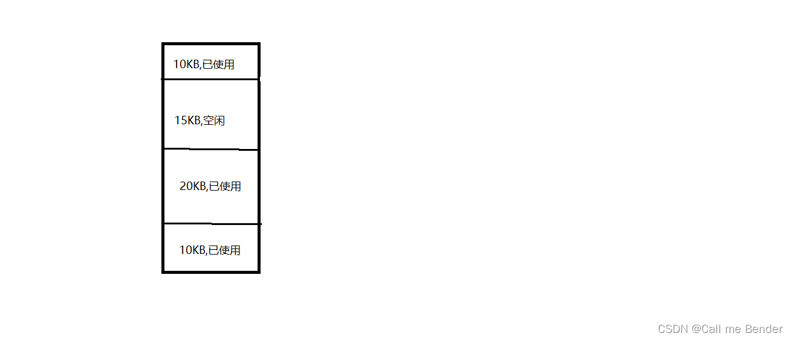
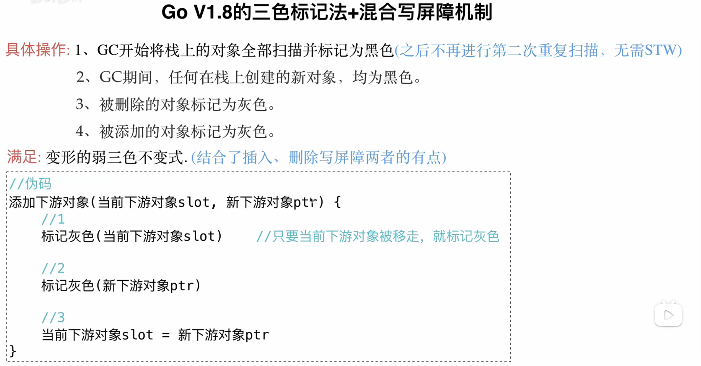

垃圾回收机制
Go V1.3 之前的标记清除（mark and sweep）法
在Go V1.3之前是采用标记清除法。
流程是：
- 暂停业务逻辑，找出不可达的对象，和可达的对象。
- 开始标记，程序找出它所有可达的对象，并做上标记。
- 标记完了之后，开始清除未标记的对象。
- 停止暂停，让程序继续跑，然后循环重复这个过程，直到 process 程序生命周期接属
该方法存在一些缺点:
- STW ，stop the world 会让程序暂停，程序出现卡顿；
- 标记需要扫描整个 heap
- 清除数据会产生 heap 碎片
- 将第四步和第三步换位置，缩短 STW 的范围

拓展：heap 碎片
Heap 堆和 Stack 栈的区别
堆与栈的区别有：
- 栈由系统自动分配，而堆是人为申请开辟；
- 栈获得的空间较小，而堆获得的空间较大；
- 栈由系统自动分配，速度较快，而堆一般速度比较慢；
- 栈是连续的空间，而堆是不连续的空间。
操作系统存储管理中的内部碎片和外部碎片
内部碎片
固定分区存储管理会产生内部碎片。
固定分区存储管理将主存发划分为系统区和用户区。系统区存放操作系统驻留代码和数据，用户区划分为若干个连续区域，每个区域的位置固定，大小可以相同也可以不同，但是每个区域在任意时刻只能装入一道作业，一旦划分好区域，主存中的分区个数就固定了。
当我们在 10 KB 大小的一个分区中装入 8KB 大小的程序时，此时的分区有 2KB 被浪费掉了，而且由于每个分区只能装入一个程序，所以这 2KB 大小的空间也不能被其他的程序使用，此时我们可以说产生了 2KB 的内部碎片。当内部积累到一定程度时，将严重影响主存空间的利用率个系统的运行效率。
外部碎片
可变分区存储管理可能产生外部碎片。
在可变分区存储管理中，主存中的分区不是事先划分好的，而是在主存空间充足时，根据该作页需要的空间大小分配一个分区给他，实现了作业大小等于分区大小，解决了内部碎片的问题。那么作业大小等于分区大小为什么还会产生碎片呢?
例子：

我们可以看到，上图的四个分区中有三个正在被使用，一个未被使用，那么当我们要装入大小为 12KB 的作业时，系统会为我们在 15 KB 的空闲区中划分出一个 12 个 KB 大小的分区，这样这个 15KB 大小的分区就变成了一个 12 KB 大小的分区和一个 3 KB 大小的分区，12 KB 大小的分区被作业占用了，3KB 大小的分区因为太小所以能容纳的作业太少，所以被占用的可能性也很小，很多个这种小的内存空间长时间不被占用就是一种对内存空间的浪费，我们称之为外部碎片。
总结原因
内部碎片和外部碎片本质上都是对内存空间的浪费，区分二者的最主要特征就是：内部碎片产生与分区内，外部碎片产生于分区外，内外是相对于分区而言的。
内部碎片产生的原因：
在固定分区中，固定分区的大小大于等于作业大小，当分区大小大于作业大小时就会产生不能被其他作业利用的碎片，称为内部碎片。在固定分区存储管理中，10 KB 大小的分区装入 8 KB 大小的作业，分区内产生了 2 KB 大小的内部碎片。
外部碎片产生的原因：
在可变分区存储管理中，系统划分给作业的分区大小等于作业大小，在分区内就不会产生多余的空间，但是在分区外就可能产生小的内存碎片，因为太小不能被分配给作业，小的碎片长期积累浪费了大量的内存空间，我们称之为外部碎片。
Go V1.5 三色标记法
三色标记法概述
在Go V1.5 的时候采用了三色标记法。
三色标记法是指在标记过程中将对象标记为黑色、灰色或者白色。黑色代表存活对象，灰色代表正在标
记中，白色表示死亡对象；
- 最开始的时候，所有的对象都是白色的；
- 而后从 GC root 出发，先将对象标记为灰色，再将其引用对象标记为灰色，最后把自己从灰色变为黑色；
具体过程如下：
- 全部节点标记白色。
- 每次 GC 回收开始, 然后从根节点开始遍历所有对象，把遍历到的对象从白色集合放入“灰色”集合。
- 遍历灰色集合，将灰色对象引用的对象从白色集合放入灰色集合，之后将此灰色对象放入黑色集合。
- 重复第三步，直到灰色中无任何对象。
- 回收所有的白色标记表的对象，也就是回收垃圾。
三色标记法误标记问题
**存在误标记的问题：这个标记过程可以和应用线程并发运行，不过这个时候可能存在一个问题，就是可能一个对象被标记为黑色（即存活），但是随后应用线程更新了指向它的引用，它变成了死对象。这个时候，标记结束之后，该对象依旧会被认为还存活着（活死人，假阴性）。 **
举例子：

已经标记为灰色的对象 2，有指针p指向白色的对象3。

在还没扫描到对象 2，已经标记为黑色的对象 4 创建指针 q，指向了对象 3。

这时候，对象 2 将指针 p 移除，对象 3 就被挂在了已经扫描完成的黑色的对象 4 下。
总结
如果三色标记法不被 STW 保护，在以下条件下会发生对象丢失的现象：
- 一个白色对象被黑色对象引用（白色被挂在黑色下）
- 灰色对象与它之间的可达关系的白色对象遭到破坏（灰色同时丢了该白色）
强弱三色不变式
破坏以下条件则不会发生对象丢失：
- 一个白色对象被黑色对象引用（白色被挂在黑色下）
- 灰色对象与它之间的可达关系的白色对象遭到破坏（灰色同时丢了该白色）
为此，引入了强弱三色不变式。
强三色不变式
强制性的不允许黑色对象引用白色对象。
弱三色不变式
黑色对象可以引用白色，但是白色也会被灰色引用，或者可达的上游路线上有灰色。
屏障机制
屏障机制就是采用强三色不变式和弱三色不变式的机制来保证对象不会被丢失。
屏障就是当程序执行的流程过程中，可以加一个判断定式，这就是屏障的含义。思想与钩子函数类似。
有两种：
- 插入屏障：什么时候触发，当一个对象被引用则会被触发
- 删除屏障：如果对象被删除，就触发这个删除屏障
插入写屏障
比如说 A 引用 B 的时候，B 被标记为灰色。（A 通过索引可以找到 B ，那么 B 必须标记为灰色。）

插入屏障不在栈上使用。
删除写屏障

混合写屏障


更新: 2022-11-07 17:04:23
原文: https://www.yuque.com/xiaoshan_wgo/codingnotes/evi3g1